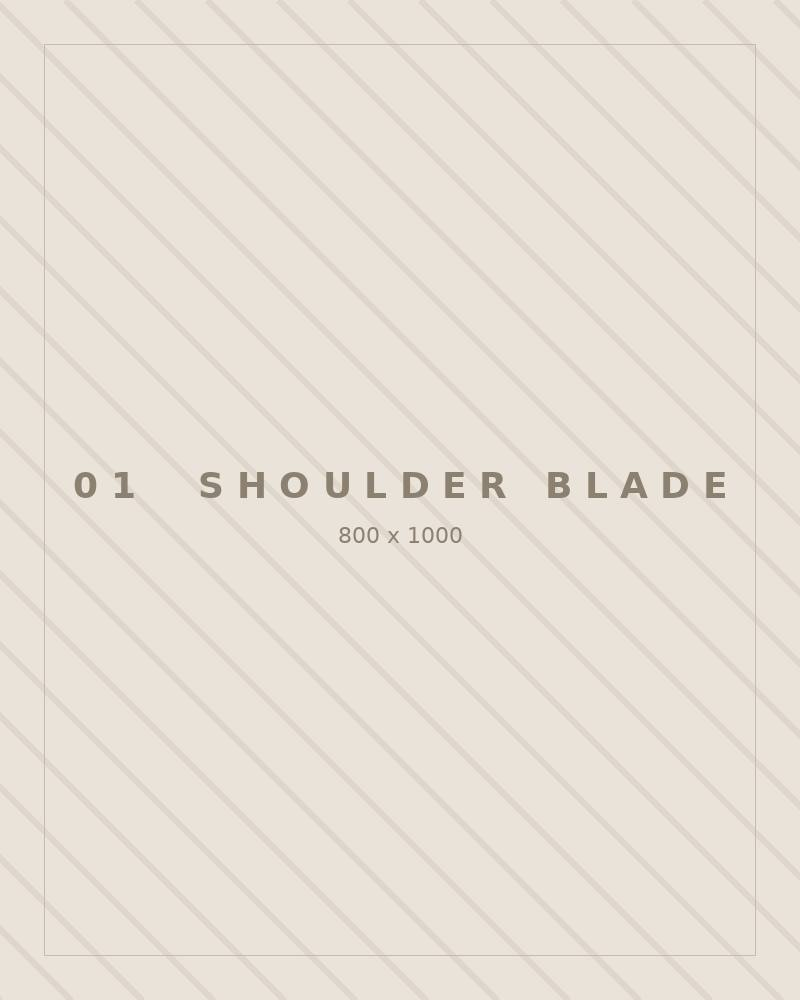
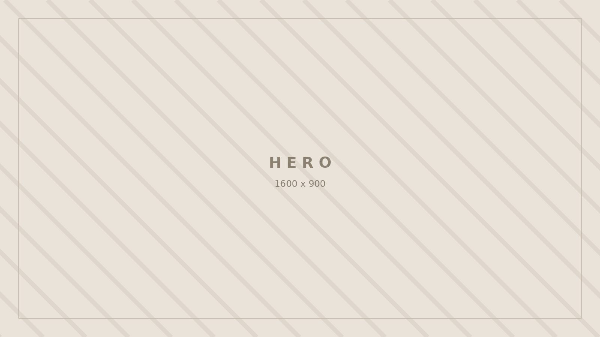
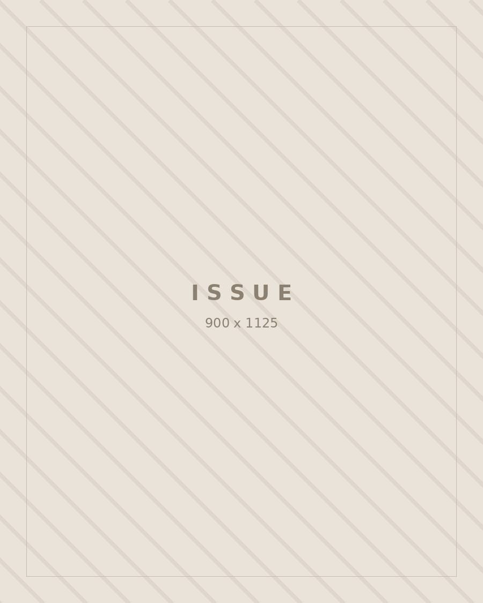
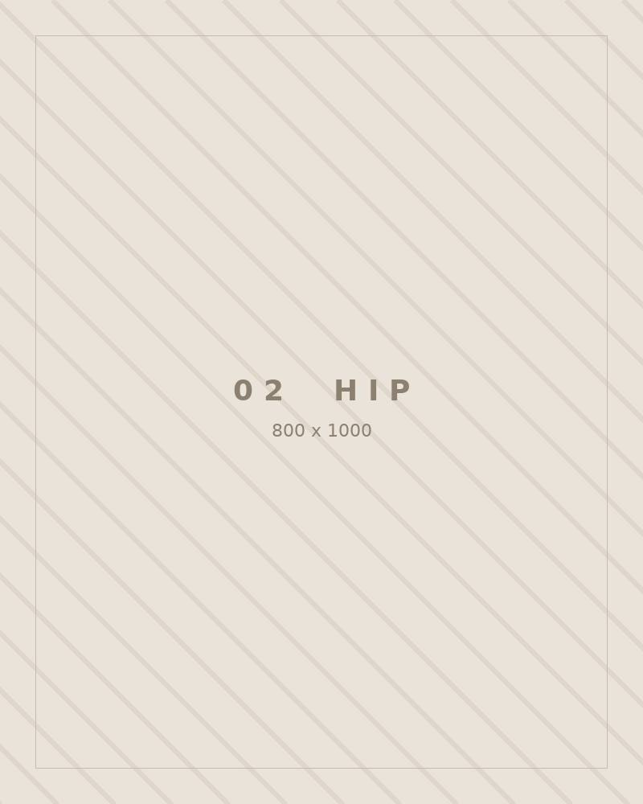
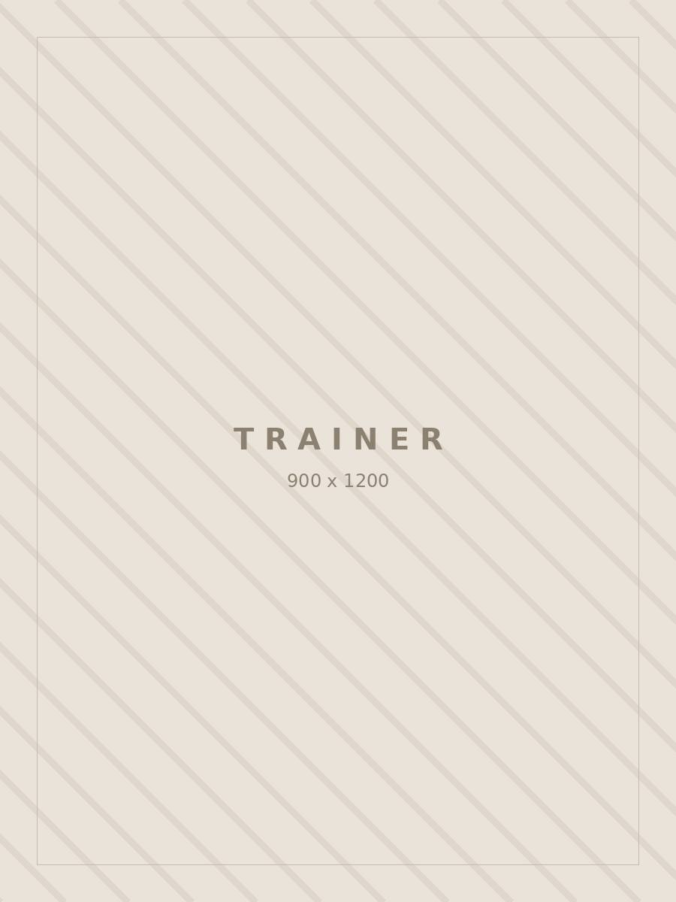
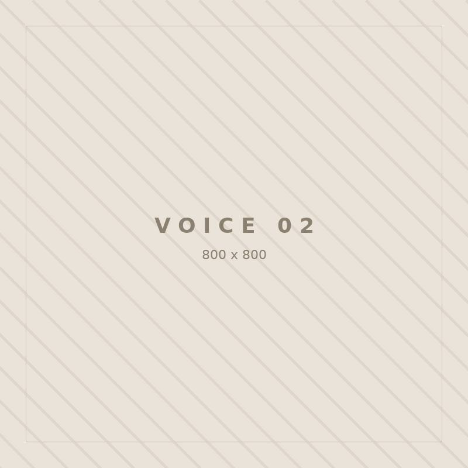
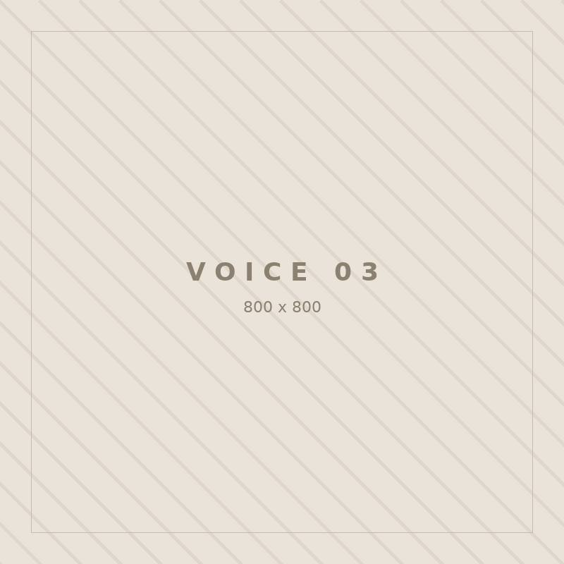
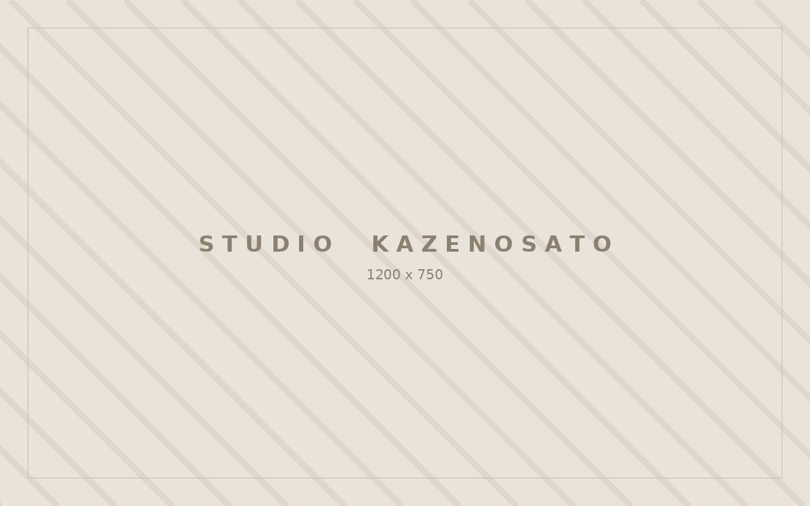

01
胸まわり・肩甲骨Chest & Scapula
背中が丸まったままだと、首と肩はその姿勢を支え続けることになります。肩甲骨がなめらかに動くようになると、胸が自然に開き、背筋を意識しなくても伸びた状態を保ちやすくなります。

神戸・六甲道 ｜ 40代・50代の女性のためのパーソナルトレーニング
肩甲骨、股関節、体幹。
この3つが動きを取り戻したとき、
鏡に映る立ち姿から、変わりはじめます。
公式LINEのご登録から、30秒でご予約いただけます。
運動の経験は問いません。今のお体の状態を知るところから、お気軽にどうぞ。
Issue 40代からの体に起きていること
40代を過ぎたころから、多くの方が同じ戸惑いを口にされます。「食べる量は減らしているのに、以前のようには戻らない」「休んだはずなのに、疲れが残っている」。がんばり方が足りないのだろうか、と。
そうではありません。長く座る時間が続き、年齢を重ねていく中で、肩甲骨や股関節といった大きな関節が、少しずつ動かなくなっていきます。動かなくなった関節の分を、腰や首が代わりに引き受ける。肩の張り、腰の重さ、そして姿勢の崩れは、その積み重ねから生まれています。

イメージ姿勢の崩れは、体の一部だけの問題ではなく、動かなくなった関節の連鎖として現れます。
食事を減らしても、以前のようには戻らない 同じことをしているつもりなのに、体だけが違う反応をする。
休んだはずなのに、疲れが残っている 朝、起きた時点ですでに体が重たい日がある。
肩こりと腰の重さが、当たり前になっている ほぐしてもらっても、数日でもとに戻ってしまう。
写真に写る自分の姿勢が、気になる 背中が丸い。首が前に出ている。服の似合い方も変わってきた。
そのどれもが、「体が動く範囲」の問題です。
動く範囲が戻れば、まず立ち姿から変わりはじめます。
Concept NeeDSの考え方
体重を落とすより、
姿勢と動きを整える。
NeeDSは、減量を目的としたジムではありません。私たちが行うのは、動かなくなっていた関節を動く状態に戻し、体を「使える」状態に整えることです。 体重計の数字を追いかけるのではなく、日々の身体感覚と、鏡の中の印象が変わっていくことを目指します。

背中が丸まったままだと、首と肩はその姿勢を支え続けることになります。肩甲骨がなめらかに動くようになると、胸が自然に開き、背筋を意識しなくても伸びた状態を保ちやすくなります。

立つ・歩く・座るという、毎日くり返す動作の土台です。ここが動き出すと、腰でかばう必要がなくなり、同じ距離を歩いたあとの体の残り方が変わってきます。

お腹を固める筋トレのことではありません。体の中心で姿勢を支えられるようにすることです。ここが働くと、力まなくてもまっすぐ立てるようになり、シルエットの印象が変わっていきます。
3つが揃うと、体は「ラクな姿勢」を自分で選べるようになります。意識して背筋を伸ばし続けるのではなく、伸びている状態のほうが心地よくなる。
これが、NeeDSがお伝えしている「整えてから、動かす」という考え方です。
Method トレーニングの流れ
いきなり体を鍛えることはしません。今のお体が「どこで詰まっているのか」を確かめるところから始め、その一点に必要な動きだけを、順番に積み上げていきます。
Step 01
肩甲骨・股関節・背骨を中心に、どこがどれだけ動くかを一つずつ確認します。左右差、動きにくい方向、力が入りにくい部位。ここで、これまで感じてこられた不調と、今のお体の状態がつながります。
初回の無料体験でも実施しますStep 02
硬くなっている部分をゆるめ、動かなくなっていた関節を動かせる状態に戻していきます。息が上がるような内容ではありません。多くの方が、この段階で「体が軽くなった」とおっしゃいます。
Step 03
取り戻した動きを、立つ・歩く・座るという日常の動作の中で使えるようにしていきます。重いものを持ち上げて追い込む時間ではなく、体を正しく使えるようにするための時間です。
Step 04
その日の変化を一緒に確かめたうえで、次回までのメニューをお渡しします。1日5分程度で続けられる内容です。週1回のご来店でも、続けていただければ体は少しずつ変わっていきます。
初回の体験は無料です。その場で姿勢と動作のチェックまで受けていただけます。
当日は手ぶらでお越しください（ウェア・シューズ・タオルは無料でお貸し出ししています）。
Trainer お一人おひとりを、担当制で

プライベートジムNeeDS 代表 ／ NeeDSコンディショニングメソッド考案者
プロ野球およびMLB傘下マイナーリーグ球団の選手に対し、コンディショニングとパフォーマンス向上の指導を行ってきました。専門は「体の動かし方」です。
競技の世界でも、フォームを変える前に必ず体の状態を評価します。動かない体のまま動きだけを直そうとしても、うまくいかないからです。同じ順序を、お仕事やご家族のことで忙しく過ごされている方にも。追い込むことも、根性を求めることもいたしません。ご自身の体で変化を確かめながら、一歩ずつ進めていきましょう。
Voice 通われている方の声
「鏡に映る立ち姿が、変わりました」
体重はそれほど変わっていないのですが、周りから「なにか変わった?」と聞かれるようになりました。姿勢なのだと思います。
K.M. 様／52歳・会社員
通われて7ヶ月

イメージ「夕方の肩の重さが、気にならなくなりました」
ほぐしてもらっても数日でもとに戻っていたのが、そもそも張りにくくなってきた感じです。理由を説明してもらえるので、納得して続けられています。
T.A. 様／48歳・パート
通われて1年

イメージ「運動が苦手なままでも、続けられています」
完全個室でマンツーマンなので、人の目がまったく気になりません。きついことをさせられないので、行くのが億劫になりませんでした。
Y.N. 様／55歳・自営業
通われて5ヶ月
※ 写真・コメントはイメージです。実際にお通いの方のお声は、掲載のご許可をいただき次第、順次差し替えてまいります。体の変化の感じ方には個人差があります。
Free Trial まずは、無料体験から
はじめから続けるかどうかを決めていただく必要はありません。初回は無料でお試しいただけますので、姿勢と動作のチェックを受けて、実際に体が動くようになる感覚を確かめてから、ゆっくりご判断ください。
運動から長く離れている方こそ、歓迎しています。
体力に自信がなくても大丈夫ですので、お気軽にお越しください。
ご予約は公式LINEから承っています。
ご相談・ご質問だけでも構いません。「今の体で通えるか知りたい」といったメッセージも歓迎です。
FAQ よくあるご質問
Studio 店舗・アクセス
どちらの店舗も完全予約制・完全個室です。お仕事帰りやお買い物のついでにもお立ち寄りいただけるよう、夜21時まで営業しています。


初回無料体験・完全個室／JR六甲道駅 徒歩5分
無料で体験を受ける